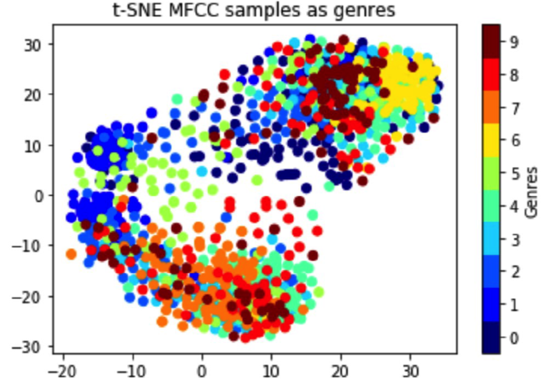
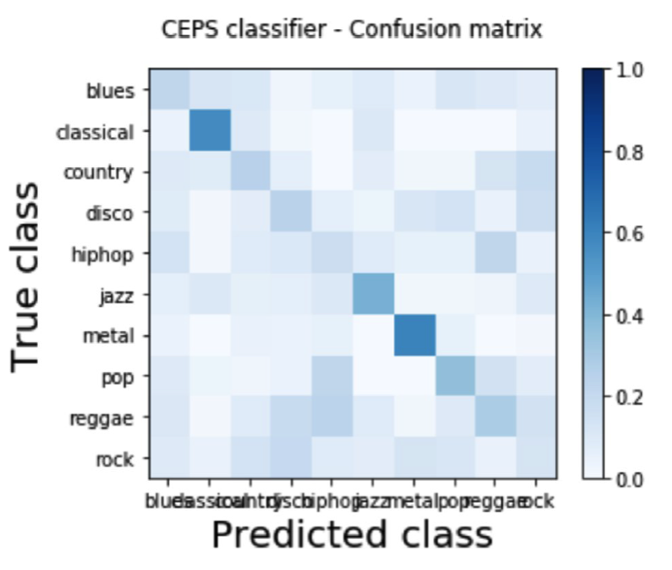
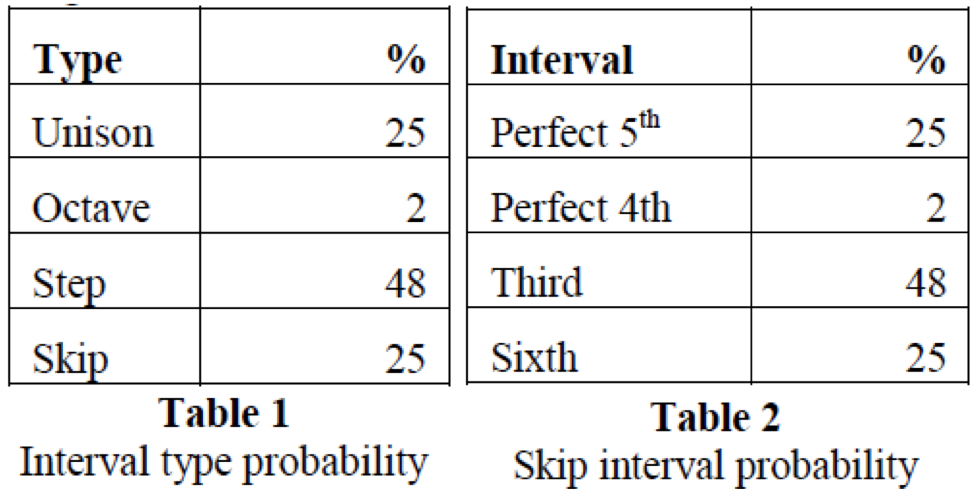
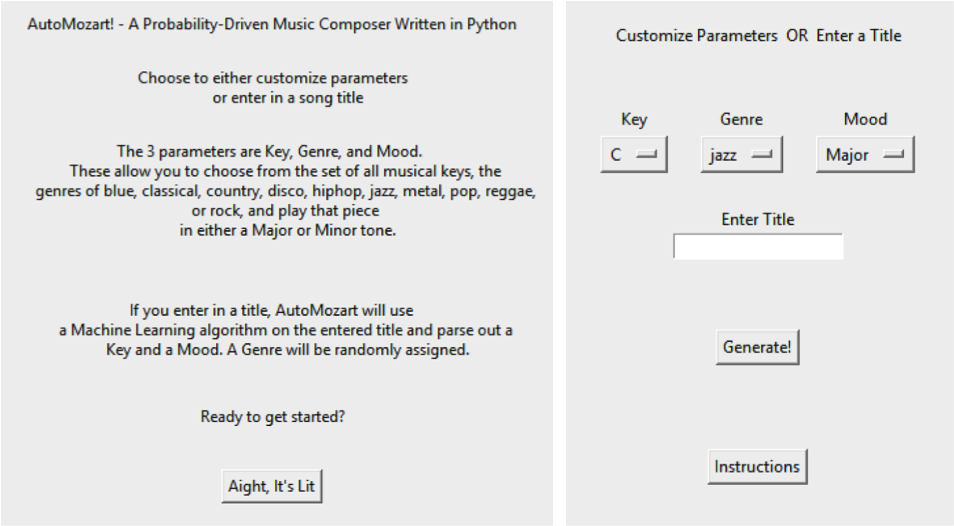

Let go your imagination!
We are trying to create a tool which can compose music using machine learning algorithm. We hope this tool can benefit composers who need inspiration, non-professional music lovers who want their own unique music for special occasions (e.g. graduation, marriage proposal, the birth of a baby, anniversary, etc.). On this web page, we will introduce the technical background of the algorithm and will demonstrate the sample output.
In sound processing, the Mel-frequency cepstrum (MFC) is a representation of the short-term power spectrum of a sound, based on a linear cosine transform of a log power spectrum on a nonlinear Mel scale of frequency
The detailed steps are as follows: a) Take the Fourier transform of (a windowed excerpt of) a signal; b) Map the powers of the spectrum obtained above onto the Mel scale; c) Take the logs of the powers at each of the Mel frequencies; d) Take the discrete cosine transform of the list of Mel log powers, as if it were a signal. The MFCCs are the amplitudes of the resulting spectrum Genre Classification by MFCC (Visualization)
In machine learning, a convolutional neural network (CNN, or ConvNet) is a class of deep, feed-forward artificial neural network that has successfully been applied to analyzing visual imagery. Since MFCC has many feature parameters per time index, MFCC coefficients of a song can be treated as an image.
CNNs use a variation of multilayer perceptrons designed to require minimal preprocessing. They are also known as shift invariant or space invariant artificial neural networks (SIANN), based on their shared-weights architecture and translation invariance characteristics.
CNNs use relatively little pre-processing compared to other image classification algorithms. This means that the network learns the filters that in traditional algorithms were hand-engineered. This independence from prior knowledge and human effort in feature design is a major advantage.
iComposer generates music by random sampling from the music database. It is built using rule-based probability-driven algorithmic music composition by Bozhidar Bozhanov. Three areas of predictions are: pitch – what note to play next; length – how long should the next note be, in order to fit the predefined meter and to keep a proper rhythm; variations – perform different variations on already played motifs.
Through our application, users can select key, mood, and genre to generate music.
Here is what the interface looks like:
Here are two pieces of sample output
C Major Jazz
F Minor Disco